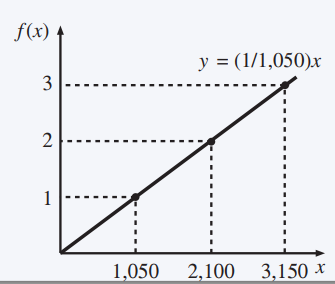
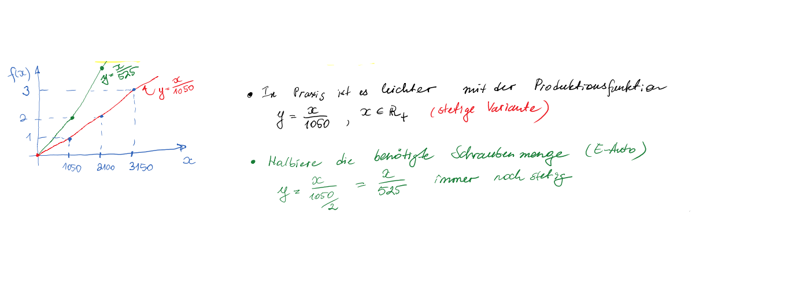
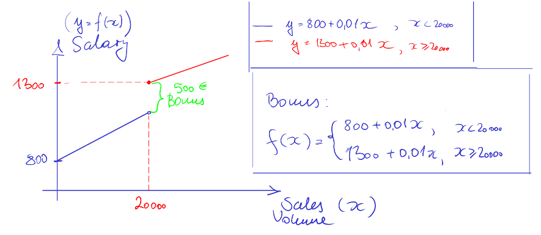
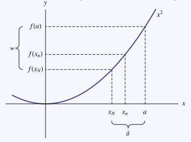
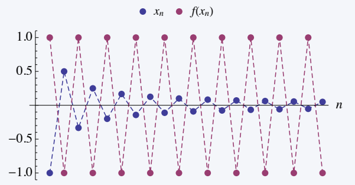
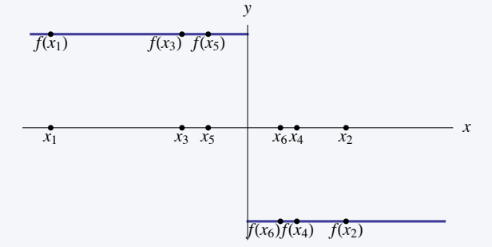
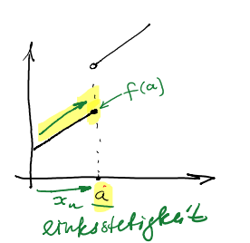
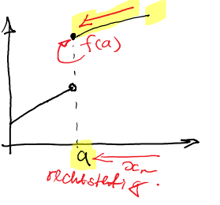
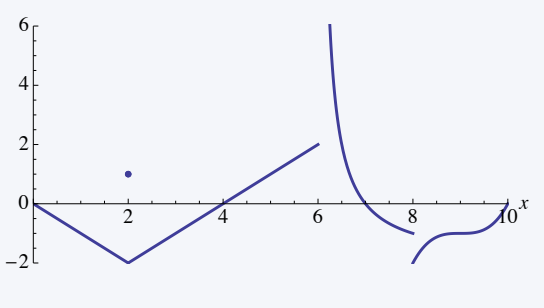

Chapter 4 Continuity of functions
Continuity of functions is an important concept used in a variety of fields, including economics.
Intuitively, a function is continuous if its graph has no “breaks” or “jumps”.
Example 4.1 (production function) A production function links inputs and outputs of a production process; formally: the output \(y = f (x)\) is generated using the input \(x\) and the production function \(f\). The production function of a car manufacturer is \(y = x/1050\), where \(y\) denotes the number of cars (output) and \(x\) denotes the number of screws (input).
 The domain of the function is \(\left\{ 1050n:n \in \mathbb{N} \right\}\) = \(\left\{ 1,050, 2,100, 3,150, ... \right\}\).
In practice it is easier to work with the production function \(y = x/1050\), with \(x \in \mathbb{R_+}\), e.g. to solve decision problems.

Exercise 4.1 (Bonus) The sellers of the guitar factory where Sophia is currently doing her internship receive monthly:
a base salary of \(800€\);
plus a commission of \(1\%\) per \(€\) on the sales volume;
plus a bonus of \(500€\) if turnover exceeds \(20,000€\).
Let \(S\) be the sales volume for a month; the salary of a seller is:
\(P = \begin{cases} 800+0.01\cdot S, & if \ S<20000 \\ 1300+0.01\cdot S &if \ S \geq 20000 \end{cases}\)
One day before the end of the month, three salespeople have achieved the following sales volumes: \(€26000\), \(€18500\), \(€6000\).
Who will work the hardest on the final day?
Answer
Employee 2, because then he will probably reach the threshold for the bonus payment (€20000).

What could possibly be a better motivational incentive for guitar salespeople?
Two possible answers (other alternatives are conceivable):
Option 1
- A multi-level bonus
Option 2
- A continuous salary function with a steeper slope from \(€20000\) sales.

4.1 Pointwise continuity
We first consider the continuity of a function \(f (x)\) at a point.
Definition 4.1 (Pointwise continuity) The function \(f:D \rightarrow \mathbb{R}\), with \(D \subseteq \mathbb{R}\), is continuous in \(a \in D\), if for every sequence \(( x_n)_{n \in \mathbb{N} }\), which converges to \(a\), it holds that \(f (x_n)\) converges to \(f (a)\).
Formally: \(\lim\limits_{n \rightarrow \infty} x_n=a \ \Rightarrow \ \lim\limits_{n \rightarrow \infty} f(x_n)=f(a)\) .
Since this applies to every sequence, we can neglect the reference to a specific sequence and write: \(\lim \limits_{x \rightarrow a} f(x)=f(a)\).
The following examples show how pointwise continuity can be understood.
Example 4.2 (Pointwise continuity I) We show that \(f (x) = x^2\) , \(x \in \mathbb{R}\), is continuous for any \(a \in \mathbb{R}\).
Let \((x_n)_{n \in \mathbb{N} }\) be a sequence with \(\lim\limits_{n \rightarrow \infty} x_n=a\).
If we choose any \(δ > 0\), then \(|x_n − a| < \delta\) applies to all \(n\) that are large enough (e.g. \(n > N_\delta\)).
Then, we have:
\(\lvert f(x)-f(a) \rvert = \lvert x_n^2-a^2 \rvert\)
\(= \lvert (x_n-a) (x_n-a+2a)\rvert\)
\(= \lvert x_n-a \rvert \lvert x_n-a+2a \rvert\)
\(\leq \lvert x_n-a \rvert ( \lvert x_n-a \rvert+ \lvert 2a \rvert )\)
\(< \delta ( \delta+2 \lvert a \rvert )\)
Since \(\delta > 0\) can be chosen arbitrarily small, the result is that the distance \(|f (x_n) − f (a)|\) becomes arbitrarily small if only \(n\) is large enough chooses. 
Example 1.1 (Discontinuity of a function at 0) The function \(f(x) = \begin{cases} +1, &if \ x \leq 0\\ -1, &if\ x>0 \end{cases}\), is discontinuous at \(0\).
We choose the sequence for \(x\) \(x_n = 1/n \cdot (−1)^n\) , \(n \in \mathbb{N}\) which converges to zero.
The following graphic shows \(x_n\) and \(f (x_n) = (−1)^n\) , \(n = 1, ... , 20\).

So it turns out that \(\lim_ {x \rightarrow \infty } x_n = 0\), whereas \(f (x_n)\) has no limit, from which the discontinuity of \(f\) at the point \(0\) follows.
The same can be seen from the following graph: Although \(x_1,x_2, ...\) tend towards \(0\), the values f\((x_1),f (x_2), ...\) jump between \(−1\) and \(1\) back and forth.

Even if the function \(f(x) = \begin{pmatrix} +1, if \ x \leq 0\\ -1, if\ x>0 \end{pmatrix}\), from the previous example is discontinuous in \(0\), it satisfies a weaker form of continuity in \(0\).
Another perspective on the point-wise continuity of a function is provided by the following direction-dependent consideration of the function’s behavior.
Definition 4.2 (Left and right continuity)
- A function \(f:D \rightarrow \mathbb{R}\) is left-continuous in \(a \in D\), if for every sequence \((x_n)_{n\in \mathbb N }\), which converges from below to \(a\), \(f (x_n)\) converges to \(f (a)\), i.e. \(\lim _{x \uparrow a} f(x)= \lim _{x \rightarrow a^-} f(x) = f(a)\).

- Similarly \(f:D \rightarrow \mathbb{R}\) is right continuous in \(a \in D\) if \(f (x_n)\) converges to \(f (a)\) for every sequence \((x_n)_{n\in \mathbb N}\) converging to \(a\) from above, i.e.
\(\lim _{x \downarrow a} f(x)= \lim _{x \rightarrow a^+} f(x) = f(a)\).

By considering limit values, one can check the pointwise left and right continuity. The following theorem also gives us an approach on how to use the concepts of left and right continuity for determining whether or not a function is continuous at a given point.
Theorem 4.1 (pointwise continuity) A function \(f:D \rightarrow \mathbb{R}\) is continuous in \(a \in D\) if and only if \(\lim _{x \uparrow a} f(x)= \lim _{x \downarrow a} f(x) = f(a)\).
Example 4.3 (check continuity) Let \(f:[0,10] \rightarrow \mathbb{R}\) be defined as
\(f(x) = \begin{cases} \lvert x-2 \rvert -2, &\text{if} \ 0 \leq x<2 \ \text{or} \ 2 < x \leq 6 \\ \frac{2}{x-6 } -2, &\text{if} \ 6< x <8 \\ (x-9)^3-1, &\text{if} \ 8 \leq x \leq 10 \\ 1, &\text{if} \ x=2 \end{cases}\).

The function \(f\) is discontinuous in three points:
\(f (6) = 2\), but \(\lim_{x\downarrow 6} f (x) = \infty\);
\(f (8) = −2\) applies, but \(\lim_{x\uparrow 8} f (x) = −1\).
It is \(f (2) = 1\), but \(\lim_{x\uparrow 2} f (x) = \lim_{x\downarrow 2} f (x) = −2 \neq f (2)\) .
4.2 Continuous functions and their properties
Continuity on a domain of a function:
So far we have considered continuity at a point \((a \in D)\).
Now we extend this definition to a range.
Definition 4.3 (Continuous function) A function \(f : D \rightarrow R, D \subseteq \mathbb R\) is called continuous on \(D\) if it is continuous at every point \(a \in D\).
The following theorems give us the properties of continuous functions.
Theorem 4.2 (Continuous functions) Let \(f\) and \(g\) be continuous functions, and let \(c \in \mathbb {R}\). Then the following functions are also continuous:
\(c f (x)\),
\(f (x) + c\),
\(f (x) \pm g(x)\),
\(f (x) \cdot g(x)\),
\(f (x)/g(x)\), for \(g(x) \ \neq 0\),
\(f^{ (−1)} (x)\), if it exists.
Theorem 4.3 (Composition of continuous functions) Let \(f : D \rightarrow \mathbb {R}\) and \(g : E \rightarrow \mathbb {R}\) be functions with \(f (D) \subset E\) if \(f\) and \(g\) are continuous, then the function is also
\(g \circ f:D \rightarrow \mathbb{R} , \ g(f(x))\),
continuous.